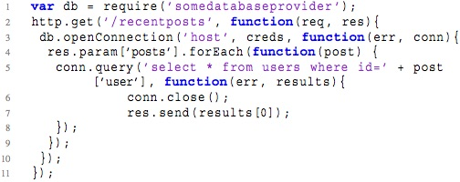

Ongoing:
- Program analysis as a GitHub service
- Modeling and checking of micro-services
- Debugging/visualizing concurrent systems
- Using SMT-solvers to allocate resources in the data center
- Crowd-sourcing specification mining
- Data-temporal specification mining
- Test-case generation using specification miners
- Characterizing physical insider attacks on Facebook
- Managing assertions in large systems code
- Secure and flexible data management using ARM TrustZone
- Compiling PlusCal specs into Go code implementations
- ... and some others
Ongoing, but further along:
|
|
TimeSquared: multi-threaded callstack analysis. (Try it) Helping developers understand complex multi-threaded systems by capturing callstack/event information (with DINAMITE) and supporting exploration of the captured data through visualization. |
|
|
Dinv: distributed system state invariant detector. (Video!) Distributed systems are difficult to debug and understand. One reasons for this is distributed state, which is not easily accessible and must be pieced together from the states of the individual nodes. Dinv statically analyzes the node source code to identify distributed state variables and then instruments the system to record these variables at runtime. After system execution Dinv uses dynamic analysis to determine consistent distributed state snapshots and infers likely distributed state invariants. |
|  |
Callbacks are a popular language features in JavaScript. However, they are also a source of comprehension and maintainability issues. The example on the left illustrates nested, anonymous callbacks, as well as asynchronous callback scheduling. Not much code, but so much complexity! We carried out a study of callbacks across 138 applications, and are developing tools to help developers manage callback hell in their applications. Our analysis code from the study is online. |